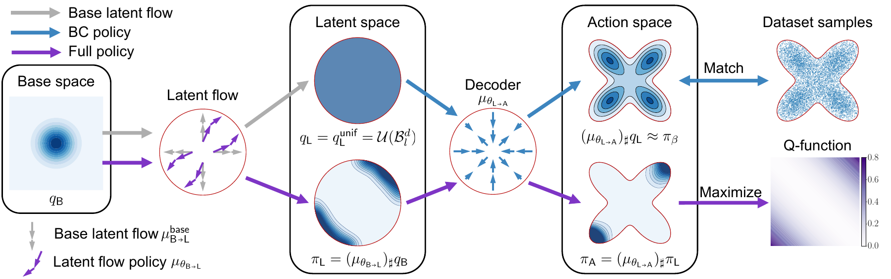
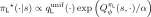
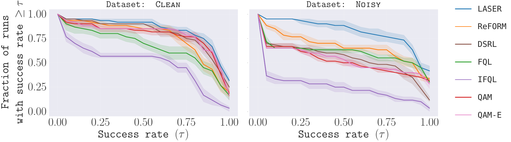
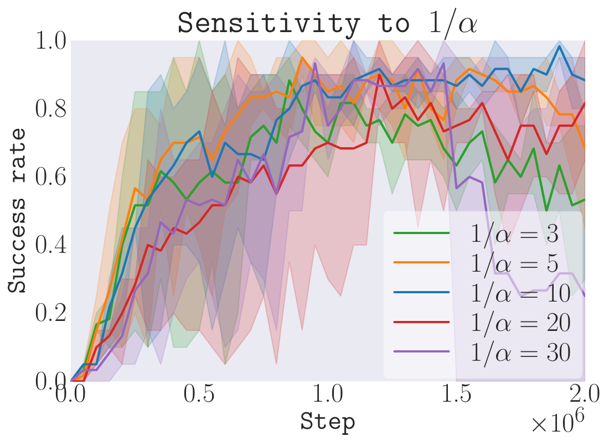
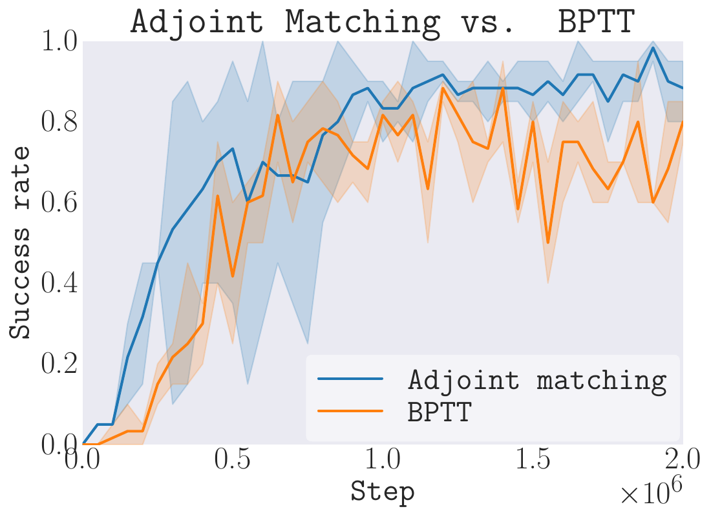
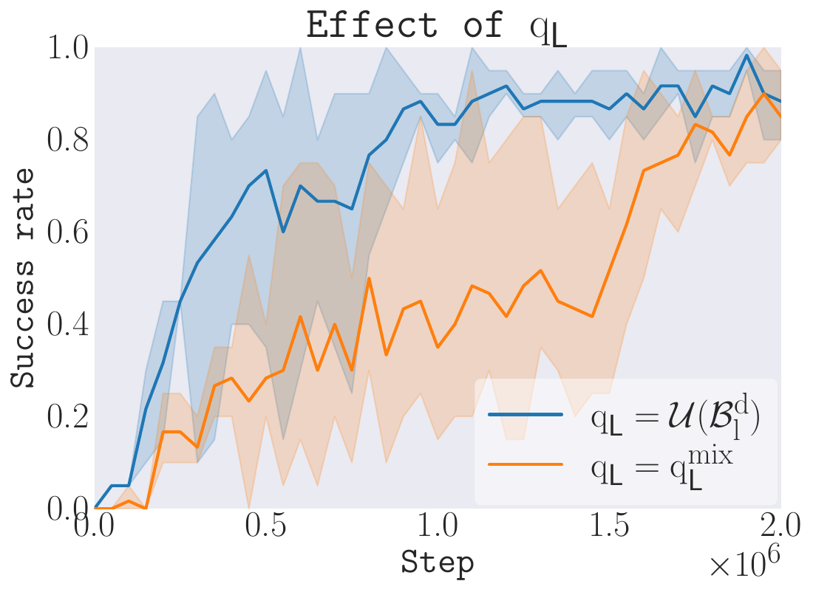

LASER: Latent Space Adjoint Matching for Support-Constrained Entropy-Regularized Offline RL
NeurIPS 2026
1Massachusetts Institute of Technology2MIT Lincoln Laboratory
Overview
Offline reinforcement learning learns from a fixed dataset. A policy must improve on the behavior in that dataset while avoiding out-of-distribution actions. Constraining the policy to a learned latent support helps, but directly maximizing the critic can still cause mode collapse.
- Keep actions within the learned support. A behavior-cloning flow decoder maps a bounded latent space to the dataset's action distribution. We optimize the latent distribution while keeping the support to maintain support constraints.
- Retain diverse, high-value actions. An expressive latent flow policy uses explicit entropy regularization to balance value maximization with policy diversity.
- Train efficiently with adjoint matching. LASER optimizes the entropy-regularized latent policy without backpropagating through its flow trajectory.
in the main OGBench suite
the best mean success rate
mean success rate
Method
LASER learns where to sample in latent space, then decodes those samples into actions. Its four components are trained jointly: a behavior-cloning decoder, a reference latent flow, a critic, and an entropy-regularized latent policy.

1 Learn the decoder
Flow matching maps a uniform distribution on a bounded ball to dataset actions, conditioned on the state.
2 Learn the reference flow
A second flow maps Gaussian base noise to the uniform latent distribution used as the reference for adjoint matching.
3 Learn the critic
Temporal-difference learning estimates action values. Composing the critic with the decoder gives a value function in latent space.
4 Optimize the latent policy
Adjoint matching learns a value-tilted latent distribution, balancing higher values with entropy.
The target latent distribution, for a fixed state, critic, and decoder

The temperature α controls the balance between value and entropy. The uniform reference defines the permitted latent support.
In practice, LASER projects numerical latent outputs onto the bounded ball before decoding. Action-space support depends on how faithfully the learned decoder captures behavior support. Adjoint matching avoids BPTT through the latent flow.
Why an expressive flow policy?
A Gaussian latent policy is simple, but limits expressiveness. In our illustrative comparison, the flow policy achieves a stronger tradeoff between entropy and expected value.


Experiments
We evaluate LASER on OGBench, spanning locomotion and manipulation. Four environments × five tasks × two dataset qualities give 40 evaluation settings, each run with three training seeds.
AntMaze
Locomotion & navigation
Cube-single
Single-object manipulation
Cube-double
Two-object manipulation
Scene
Multi-object manipulation
We compare with ReFORM, DSRL, FQL, IFQL, QAM, and QAM-E on both clean and noisy datasets. LASER uses one set of method-specific hyperparameters across tasks.
Strong performance across dataset qualities


LASER outperforms the evaluated baselines in aggregate, reaching at least 95% of the best mean success rate in 34 of 40 settings and a mean success rate of 100% in 13 settings.
What makes LASER work?
Ablations on cube-double-play-singletask-task2-v0 examine entropy strength, optimization, and the decoder prior.
Entropy strength


Adjoint matching


Changing the decoder prior


Lines show mean success rates; shading spans the minimum and maximum across runs.
See the paper and appendix for proofs, implementation details, additional ablations, and the harder Puzzle-4×4 evaluation.
Abstract
While offline reinforcement learning (RL) enables policy optimization from static datasets without costly online interaction, it remains bottlenecked by the risk of executing out-of-distribution (OOD) actions. Recent approaches mitigate this by learning a behavior-cloning policy through flow matching and then performing RL within its constrained latent space. However, naïvely optimizing the latent policy can easily cause the policy to collapse into a brittle mode or exploit sharp artifacts of the learned critic. In this work, we find that entropy regularization is essential in latent-space RL for addressing these challenges. We introduce LASER, a novel offline RL algorithm that applies latent-space adjoint matching to achieve entropy-regularized latent-space RL with expressive flow policies while avoiding backpropagation through time. Through comprehensive experiments on 40 challenging OGBench tasks with varying dataset qualities, we show that LASER achieves state-of-the-art performance. Notably, LASER uses fixed method-specific hyperparameters across all tasks and outperforms the evaluated baselines, including those with task- and dataset-specific tuning, which highlights the robust applicability of LASER.
BibTeX
@inproceedings{zhang2026laser,
title={{LASER}: Latent Space Adjoint Matching for
Support-Constrained Entropy-Regularized Offline {RL}},
author={Zhang, Songyuan and So, Oswin and Yu, Eric Yang and
Cleaveland, Matthew and Crowley-Dolen, Peter and Fan, Chuchu},
booktitle={Advances in Neural Information Processing Systems},
year={2026}
}